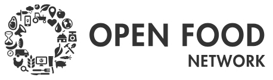
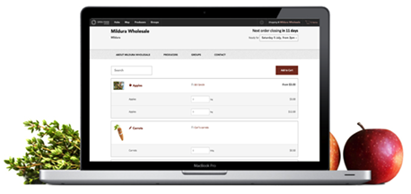

Join the Food Revolution

Participate Now!
GitHub
Connect suppliers, distributors and consumers for the sale and purchase of local produce
OFN Project Page
User Documentation & Project Roadmap - info and videos showing how to use the OFN, whether you are a customer, a hub or a producer.

Thoughts From Contributors:
"Working on the Open Food Network has stretched me as a developer. I've learnt new tech, improved my development workflow and become better at building solid, reliable apps."
- Rohan
"Decentralised control of the food system, transparency of value chains and open source software are the three major factors which distinguish it from other projects in the food system space."
- Rob

"OFN is the most fun Rails project I've been involved with. I've been developing slick UX with Angular.js with all the toys: Sass, Haml, Coffeescript."
- Will